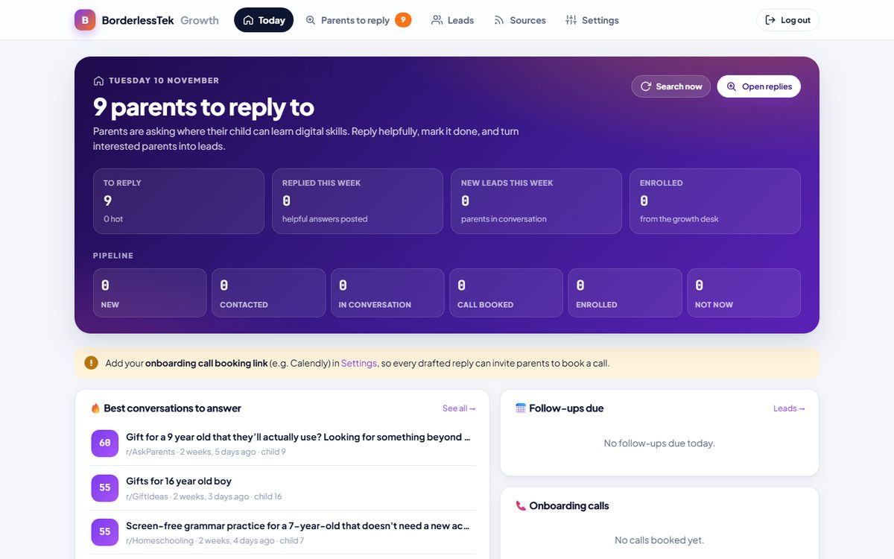
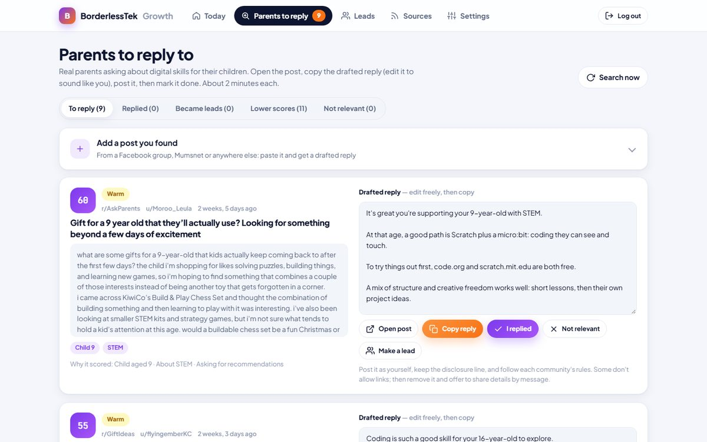

The problem
BorderlessTek teaches coding, animation and design online to children aged 6–16. Every day, parents ask in public communities where their child can learn these skills, but nobody on a small team has hours to search Reddit, Mumsnet and Google every morning, reply thoughtfully and remember to follow up.
The goal was an "employee" that does the searching, sorting, writing and remembering, so the team only spends about two minutes per family.

What it does, step by step
- Searches on a schedule. An external cron job calls the app's tick endpoint on a schedule. It reads public parent communities on Reddit, the team's Google Alerts and any RSS feeds they add, with rate limiting to respect each source.
- Understands each post. A scoring engine gives every post a score out of 100: is a parent talking about their child, the child's age, the topic (coding, Scratch, Python, animation, robotics, AI…), whether they're asking for recommendations, and the country. Adult learners, adverts and off-topic posts are filtered out. Every score comes with a plain-English reason.
- Writes a reply. For each good match it drafts age-appropriate advice with free resources first, then an honest disclosure line and a tracked booking link.
- Hands over to a human. A team member reviews, edits, posts the reply as themselves and clicks "I replied".
- Follows up. Interested parents become leads. Follow-ups are scheduled at 2, 5 and 10 days with a ready-to-send message.
- Reports daily. A morning summary arrives on Telegram and/or email: parents to reply to, follow-ups due, calls booked.

Key decisions
- Human in the loop, on purpose. Automated posting and unsolicited DMs are banned by Reddit, Facebook, Instagram and WhatsApp, and break UK/EU marketing law (PECR, GDPR). For a children's brand, trust is everything. So the agent finds the conversations and does the writing; a person presses send.
- Explainable scoring before a language model. The first version uses transparent rules, so the team can see exactly why a post scored 86 and tune it. Drafts are built from templates for the same reason, and to keep running costs at zero until results justify an LLM.
- No server to babysit. Everything runs on Render with a Neon PostgreSQL database; an external cron service wakes it up. Nothing needs to stay on anyone's PC.
Honest scope: the current version uses rule-based scoring and template-based drafting, with no large language model yet. Adding LLM-written drafts (Claude API) is the next planned phase, alongside an assistant on the school's website and WhatsApp/Instagram replies.
What it shows
- Designing an agent-style workflow: sense → decide → act → follow up → report.
- Turning a vague business goal ("get more students") into a measurable pipeline.
- Building with platform rules and data-protection law in mind from day one.